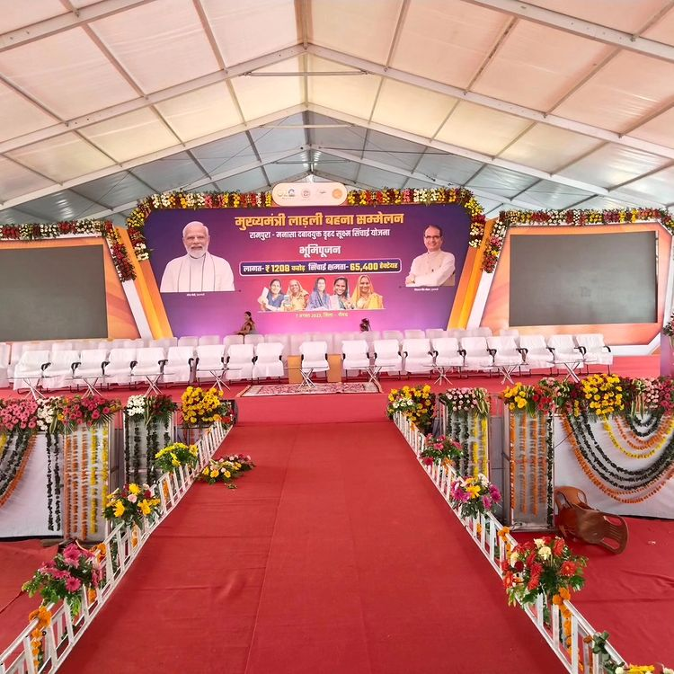
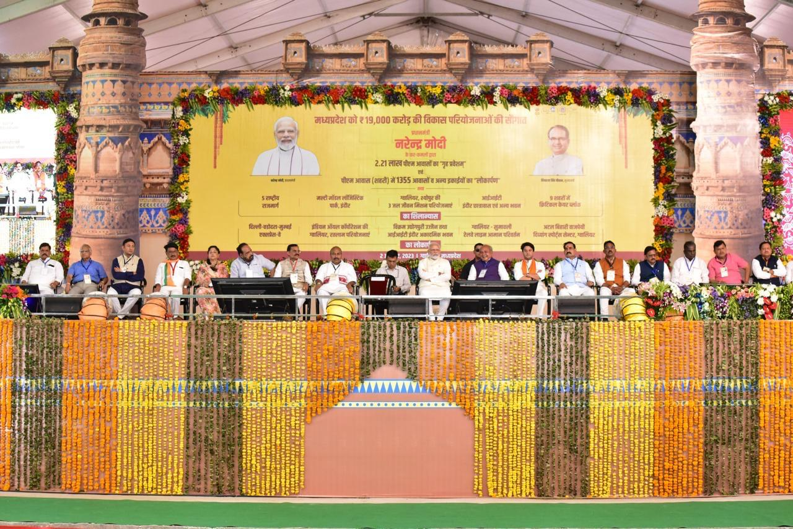

Loading...
3 Comments

John Doe 01 Jan 2045
Diam amet duo labore stet elitr invidunt ea clita ipsum voluptua, tempor labore accusam ipsum et no at. Kasd diam tempor rebum magna dolores sed eirmod
John Doe 01 Jan 2045
Diam amet duo labore stet elitr invidunt ea clita ipsum voluptua, tempor labore accusam ipsum et no at. Kasd diam tempor rebum magna dolores sed eirmod
John Doe 01 Jan 2045
Diam amet duo labore stet elitr invidunt ea clita ipsum voluptua, tempor labore accusam ipsum et no at. Kasd diam tempor rebum magna dolores sed eirmod
Leave a comment
Categories


